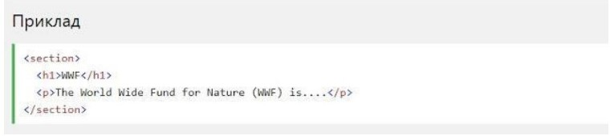
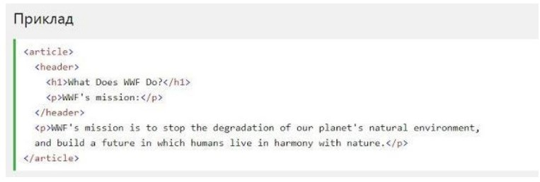

HTML5 Семантичні елементи
Семантичний елемент чітко описує його значення як для браузера, так і для розробника.
Приклади не семантичних елементів: <div> і <span> - нічого не говорить про його вміст.
Приклади семантичних елементів: <form>, <table> і <article> - чітко визначає його зміст.
Підтримка браузерів


Семантичні елементи HTML5 підтримуються у всіх сучасних браузерах.
Крім того, ви можете "навчити" старих браузерів, як обробляти "невідомі елементи".
Прочитайте про це в підтримці браузера HTML5.
Нові семантичні елементи в HTML5
HTML5 пропонує нові семантичні елементи для визначення різних частин веб-сторінки:
- <section>
- <article>
- <header>
- <footer>
HTML5 <section> елемент
Елемент <section> визначає розділ в документі.
Згідно з документацією в3к'с HTML5: "розділ представляє собою тематичну угруповання контенту, зазвичай з заголовком".
Домашня сторінка зазвичай може бути розділена на розділи для ознайомлення, змісту і контактної інформації.
HTML5 <article> елемент
Елемент <article> визначає незалежний, автономний вміст.
Стаття повинна мати сенс самостійно, і вона повинна мати можливість читати його незалежно від іншої частини веб-сайту
Приклади того, де можна використовувати елемент <article>:
- повідомлення на форумі
- блозі
- газетна стаття
HTML5 <header> елемент
Елемент <header> задає заголовок для документа або розділу.
Елемент <header> повинен використовуватися в якості контейнера для вступного змісту.
В одному документі може бути кілька елементів <header>.
У наступному прикладі визначається заголовок для статті:
